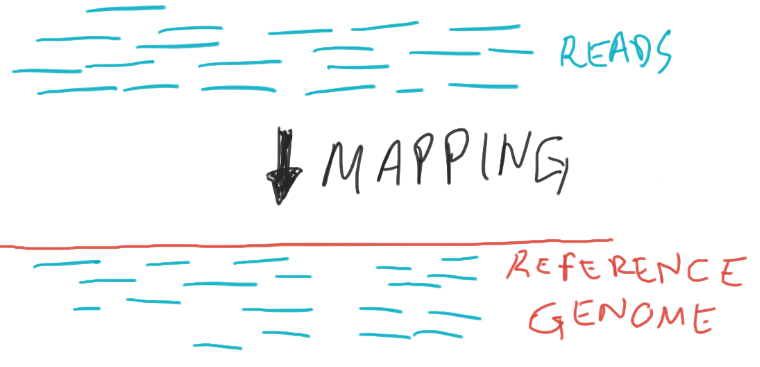

This page contains all the same exercises found throughout the materials. They are compiled here for convenience.
A PhD student with username ab12 wants to process some
sequencing data from Sanger pipelines using a python script developed by
a postodoc colleague. They have instructions for how to install the
necessary python packages, and also the actual python script to process
the data.
Q1. Which of the following describes the best practice for the student to organise their files/software?
Option A:
/lustre/scratch123/ab12/project_name/software/ # python packages
/lustre/scratch123/ab12/project_name/data/ # sequencing data
/lustre/scratch123/ab12/project_name/scripts/ # analysis scriptOption B:
/nfs/users/nfs_a/ab12/software/ # python packages
/lustre/scratch123/ab12/project_name/data/ # sequencing data
/lustre/scratch123/ab12/project_name/scripts/ # analysis scriptOption C:
/nfs/users/nfs_c/ab12/project_name/software/ # python packages
/nfs/users/nfs_c/ab12/project_name/data/ # sequencing data
/nfs/users/nfs_c/ab12/project_name/scripts/ # analysis scriptOption D:
/nfs/users/nfs_c/ab12/project_name/software/ # python packages
/nfs/cancer_ref01/nst_links/live/sequencing_project_number12345/ # sequencing data
/lustre/scratch123/ab12/project_name/scripts/ # analysis scriptQ2. A collaborator has send the student some
additional metadata files, which were compressed as a zip file. The
postdoc told the student they can run
unzip sequencing_files.zip to decompress the file. Should
they run this command from the login node or submit it as a job to one
of the compute nodes?
Q3. The analysis script used by the student generates new output files. In total, after processing the data, the student ends up with ~300GB of data (raw + processed files). Their group still has 1TB of free space in their group scratch folder, so the student decides to keep the data there until they finish the project. Do you agree with this choice, and why? What factors would you take into consideration in deciding what data to keep and where?
Answer
A1.
Despite the long paths, we can put them into shorthand:
/nfs/users/nfs_c/ab12/is the user’s home (within NFS)/lustre/scratch123/ab12/is the user’s scratch (within lustre)/nfs/cancer_ref01/nst_links/live/is part of NFS
Option C is definitely discouraged: as /nfs is typically
not high-performance and has limited storage, it should not be used for
storing/processing data.
Option D does have the correct path for where the sequencing data are stored from Sanger pipelines (one of the iRODs directories), but it isn’t fully correct either. To do analysis on these data, the student must move files from NFS (read only) to lustre (read, write, execute for high i/o) - this is called “staging”.
Finally, options A and B only differ in terms of where the software packages are installed. Typically software can be installed in the user’s home directory, avoiding the need to reinstall it multiple times, in case the same software is used in different projects. Therefore, if the student first moves files from NFS (iRODs) to lustre (their high-performance scratch space), then option B is the best practice in this example.
A2.
Since compressing/uncompressing files is a fairly routine task and unlikely to require too many resources, it would be OK to run it on the login node. If in doubt, the student could have gained “interactive” access to one of the compute nodes (we will cover this in another section).
A3.
Leaving raw data in scratch permanently is probably a bad choice. Since typically “scratch” storage is not backed-up it should not be relied on to store important data.
If the student doesn’t have access to enough backed-up space for all the data, they should at least back up the raw data and the scripts used to process it. This way, if there is a problem with “scratch” and some processed files are lost, they can recreate them by re-running the scripts on the raw data. Because raw data straight from Sanger pipelines are deposited into NFS for safe keeping, the student doesn’t need to keep a second copy on lustre. Once their analysis is complete, those “staged” copies in lustre should be deleted.
If the student were working with original, raw, non-Sanger pipelines data not deposited directly to scratch, they should to contact the Service Desk about finding a long-term storage plan for it within NFS.
Other criteria that could be used to decide which data to leave on the HPC, backup or even delete is how long each step of the analysis takes to run, as there may be a significant computational cost associated with re-running heavy data processing steps.
Q1. Connect to gen3 using ssh
Q2. Take some time to explore your home directory to identify what files and folders are in there. Can you identify and navigate through the scratch (Lustre) and NFS directories?
Q3. Print the path to your home directory.
Q4. Create a directory called
hpc_workshop in your own home directory.
Q5. Use the commands free -h (available
RAM memory) and nproc --all (number of CPU cores available)
to check the capabilities of the login node of our HPC. Check how many
people are logged in to the HPC login node using the command
who.
Answer
A1.
To login to the HPC we run the following from the terminal:
ssh USERNAME@gen3(replace “USERNAME” with your Sanger username)
A2.
We can get a detailed list of the files on our home directory:
ls -lFurther, we can explore the NFS directory using:
ls /nfsAnd check out the scratch folders available in lustre:
ls -l /lustreA3.
To find the path of your home directory, move to it and then use the
pwd command to print the entire path:
cd
pwdIt should be
/nfs/users/nfs_[first_initial_of_username]/[username]
A4. Once we are in the home directory, we can use
mkdir to create our workshop sub-directory:
cd
mkdir hpc_workshopA5.
We run these commands to investigate how much memory and CPUs the login node that we connected to at the moment has. Usually, the login node is not very powerful, and we should be careful not to run any analysis on it.
To see how many people are currently on the login node we can combine
the who and wc commands:
# pipe the output of `who` to `wc`
# the `-l` flag instructs `wc` to count "lines" of its input
who | wc -lYou should notice that several people are using the same login node as you. This is why we should never run resource-intensive applications on the login node of a HPC.
- Create a new script file called
check_hostname.sh. Copy the code shown below into this script and save it. - From the terminal, run the script using
bash.
#!/bin/bash
echo "This job is running on:"
hostnameAnswer
A1.
To create a new script in Nano we use the command:
nano check_hostname.shThis opens the editor, where we can copy/paste our code. When we are finished we can click Ctrl+X to exit the program, and it will ask if we would like to save the file. We can type “Y” (Yes) followed by Enter to confirm the file name.
A2.
We can run the script from the terminal using:
bash test.shWhich should print the result (your hostname might vary slightly from this answer):
This job is running on:
gen3-head1(the output might be slightly different if you were assigned to a different login node of the HPC)
- Download the data for this course to your computer and place it on your Desktop. (do not unzip the file yet!)
- Use Filezilla,
scporrsync(your choice) to move this file to the directory we created earlier:~/hpc_workshop/. - The file we just downloaded is a compressed file. From the HPC
terminal, use
unzipto decompress the file. - Bonus: how many shell scripts (files with
.shextension) are there in your project folder?
Answer
Once we download the data to our computer, we can transfer it using either of the suggested programs. We show the solution using command-line tools.
Notice that these commands are run from your local terminal:
# with scp
scp -r ~/Desktop/hpc_workshop_files.zip username@gen3:hpc_workshop/
# with rsync
rsync -avhu ~/Desktop/hpc_workshop_files.zip username@gen3:hpc_workshop/Once we finish transfering the files we can go ahead and decompress the data folder. Note, this is now run from the HPC terminal:
# make sure to be in the correct directory
cd ~/hpc_workshop/
# decompress the files
unzip hpc_workshop_files.zipFinally, we can check how many shell scripts there are using the
find program and piping it to the wc
(word/line count) program:
find -type f -name "*.sh" | wc -l
find is a very useful tool to find files, check this Find cheatsheet to learn more about
it.
In the “scripts” directory, you will find an R script called
pi_estimator.R. This script tries to get an approximate
estimate for the number Pi using a stochastic algorithm.
How does the algorithm work?
If you are interested in the details, here is a short description of what the script does:
The program generates a large number of random points on a 1×1 square centered on (½,½), and checks how many of these points fall inside the unit circle. On average, π/4 of the randomly-selected points should fall in the circle, so π can be estimated from 4f, where f is the observed fraction of points that fall in the circle. Because each sample is independent, this algorithm is easily implemented in parallel.

Estimating Pi by randomly placing points on a quarter circle. (Source: HPC Carpentry)
If you were running this script interactively (i.e. directly from the
console), you would directly run the script via command line
interpreter:
/software/R-4.1.3/bin/Rscript scripts/pi_estimator.R.
Instead, we use a shell script to submit this to the job scheduler.
In order to run this script, we need to install the required package, argparse, into the Farm’s R console. Pause here to work through the below instructions:
Installing required R packages
The pi_estimator.R script requires the R library
argparse, which must first be installed into your R
workspace. Because you’re using R on this HPC for the first time, you’ll
need to install the package to run the script successfully. You should
only have to run this once, as when using R on your local machine.
To do so, we will first open an R window by typing R. To
install the package, we’ll type
install.packages('argparse'). This will prompt a few
questions. Type yes when asked to create a personal
library, yes when asked to approve the default library
location, and select a server for the download (67 is
fine). Typical package installation readout will appear on the
screen.
Once this is complete, check to make sure it installed properly by
trying to load the package library(argparse). If there are
no errors, the R library loaded ok.
To exit the R console, simply enter control+D. You’ll be asked if you
want to save the workspace image - typing n is fine in this
case.
Now we’re ready to run the estimate_pi.sh script.
- Edit the shell script in
lsf/estimate_pi.shby correcting the code where the word “FIXME” appears. Submit the job to LSF and check its status in the queue. - How long did the job take to run?
Hint
Usebhist -l JOBIDorbacct -l JOBID. - The number of samples used to estimate Pi can be modified using the
--nsamplesoption of our script, defined in millions. The more samples we use, the more precise our estimate should be.- Adjust your LSF submission script to use 200 million samples
(
/software/R-4.1.3/bin/Rscript scripts/pi_estimator.R --nsamples 200), and save the job output inlogs/estimate_pi_200M.outandlogs/estimate_pi_200M.err. - Monitor the job status with
bjobsandbhist -l JOBID. Review the outfiles in your log folder. Do you find any issues?
- Adjust your LSF submission script to use 200 million samples
(
Answer
A1.
In the shell script we needed to correct the user-specific details in
the #BSUB options. Also, we needed to specify the path to
the script we wanted to run. This can be defined relative to the working
directory that we’ve set with -cwd. For example:
#!/bin/bash
#BSUB -q normal # name of the queue to run job on
#BSUB -cwd /nfs/users/nfs_USERINITIAL/USERID/hpc_workshop # working directory
#BSUB -o logs/estimate_pi.out # standard output file
#BSUB -e logs/estimate_pi.err # standard error file
#BSUB -n 1 # number of CPUs. Default: 1
#BSUB -R "select[mem>1000] rusage[mem=1000]" # RAM memory part 1. Default: 100MB
#BSUB -M1000 # RAM memory part 2. Default: 100MB
# run the script
/software/R-4.1.3/bin/Rscript scripts/pi_estimator.Rbsub lsf/estimate_pi.shA2.
As suggested in the hint, we can use the bhist or
bacct commands for this:
bhist -l JOBID
bacct -l JOBIDReplacing JOBID with the ID of the job we just ran.
If you cannot remember what the job id was, you can check all your
jobs using bjobs or view the outfile generated at the
beginning of the run.
Sometimes it may happen that the “Memory Usage” (or MEM) is reported as 0M or a lower value than you would expect. That’s very odd, since for sure our script must have used some memory to do the computation. The reason is that LSF doesn’t always have time to pick memory usage spikes, and so it reports a zero. This is usually not an issue with longer-running jobs.
A3.
The modified script should look similar to this:
#!/bin/bash
#BSUB -q normal # name of the partition to run job on
#BSUB -G farm-course # groupname for billing
#BSUB -cwd /nfs/users/nfs_USERINITIA/USERID/hpc_workshop # working directory
#BSUB -e logs/estimate_pi_200M.err # standard error file
#BSUB -n1 # number of CPUs. Default: 1
#BSUB -R "select[mem>1000] rusage[mem=1000] span[hosts=1]" # RAM memory part 1. Default: 100MB
#BSUB -M1000 # RAM memory part 2. Default: 100MB
# run the script
/software/R-4.1.3/bin/Rscript scripts/pi_estimator.R --nsamples 200And then send the job to the job scheduler:
bsub lsf/estimate_pi.shHowever, when we run this job, examining the output file
(cat logs/estimate_pi_200M.out) will reveal and error
indicating that our job was killed. There are few clues for this, most
obviously this note:
TERM_MEMLIMIT: job killed after reaching LSF memory usage limit.
Exited with exit code 1.Furthermore, if we use bjobs to get information about
the job, it will show EXIT as the status instead of
DONE.
We can also check this by seeing what bacct -l reports
as “Memory Utilized” and see that it used 100% of the memory we gave the
job. There is also this table in the output of this command:
Share group charged </WTSI/other/farm-course/ht10>
CPU_T WAIT TURNAROUND STATUS HOG_FACTOR MEM SWAP
10.71 1 13 exit 0.8240 2.1G 0M
CPU_PEAK CPU_EFFICIENCY MEM_EFFICIENCY
0.83 83.33% 220.00%We can see that our job tried to use at least 2.1G (maybe it would have needed even more), but we only requested 1000M (~1G). So, that explains why it was killed!
To correct this problem, we would need to increase the memory
requested to LSF, adding to our script, for example,
#BSUB -R "select[mem>30000] rusage [mem=30000] span[hosts=1]"
and #BSUB -M 30000 to request 30Gb of RAM memory for the
job.
The R script used in the previous exercise supports parallelisation
of some of its internal computations. The number of CPUs used by the
script can be modified using the --ncpus option. For
example pi_estimator.R --nsamples 200 --ncpus 2 would use
two CPUs.
- Modify your submission script (
lsf/estimate_pi.sh) to:- Use the
$LSB_MAX_NUM_PROCESSORSvariable to set the number of CPUs used bypi_estimator.R(and ensure you have set--nsamples 200as well). - Request 10G of RAM memory for the job.
- Bonus (optional): use
echowithin the script to print a message indicating the job number (LSF’s job ID is stored in the variable$LSB_JOBID).
- Use the
- Submit the job three times, each one using 1, 2 and then 8 CPUs. Make a note of each job’s ID.
- Check how much time each job took to run (using
bhist JOBIDorbacct JOBID). Did increasing the number of CPUs shorten the time it took to run?
Answer
A1.
We can modify our submission script in the following manner, for example for using 2 CPUs:
#!/bin/bash
#BSUB -q normal # partiton name
#BSUB -D /nfs/users/user_USERINITIAL/USERID/hpc_workshop/ # working directory
#BSUB -o logs/estimate_pi_200M_2cpu.out # output file
#BSUB -e logs/estimate_pi_200M_2cpu.err # error file
#BSUB -R "select[mem>10000] rusage[mem=10000]" # RAM memory part 1. Default: 100MB
#BSUB -M10000 # RAM memory part 2. Default: 100MB
#BSUB -n 2 # number of CPUs
# launch the Pi estimator script using the number of CPUs that we are requesting from LSF
/software/R-4.1.3/bin/Rscript exercises/pi_estimator.R --nsamples 200 --ncpus $LSB_MAX_NUM_PROCESSORS
# echo number of CPUS
echo "Processors used: $LSB_MAX_NUM_PROCESSORS"You can then run the script using this command:
bsub lsf/estimate_pi.shWe can run the job multiple times while modifying the
#BSUB -n option, saving the file and re-running
bsub lsf/estimate_pi.sh.
After running each job we can use bhist JOBID or
bjobs -l JOBID or bacct JOBID commands to
obtain information about how long it took to run.
In this case, it does seem that increasing the number of CPUs
shortens the time the job takes to run. However, the increase is not
linear at all. For example going from 1 to 2 CPUs seems to make the job
run faster, however increasing to 8 CPUs makes little difference
compared to 2 CPUs (this may depend on how many --nsamples
you used). This is possibly because there are other computational costs
to do with this kind of parallelisation (e.g. keeping track of what each
parallel thread is doing).
Let’s load the software package bowtie2 so we can index and align a drosophila genome.
- Check what modules are available on gen3.
- Load the bowtie2 software package using the
moduletoo. - Test the
bowtiecommand to make sure the module has loaded properly. - Figure out where the bowtie2 software package is stored with the
whichcommand.
Answer
A1.
Use module avail to list all software packages available
on gen3.
A2.
module load bowtie2
A3
Simply typing in bowtie2 or any other command from the
bowtie package should print out a help page from the software. If this
doesn’t come up or if an error appears, you likely didn’t manage to load
the module properly. This is a good sanity check when loading
modules.
A4
Entering which bowtie2 should show a path to
/software/CASM/modules/installs/bowtie2/bowtie2-2.3.5.1-linux-x86_64/bowtie2.
In the hpc_workshop/data folder, you will find some
files resulting from whole-genome sequencing individuals from the model
organism Drosophila melanogaster (fruit fly). Our objective
will be to align our sequences to the reference genome, using a software
called bowtie2.

But first, we need to prepare our genome for this alignment procedure
(this is referred to as indexing the genome). We have a file with the
Drosophila genome in
data/genome/drosophila_genome.fa.
Open the script in lsf/drosophila_genome_indexing.sh and
edit the #BSUB options with the word “FIXME”. Submit the
script to LSF using bsub, check it’s progress, and whether
it ran successfully. Troubleshoot any issues that may arise.
Answer
We need to fix the script to specify the correct working directory with our username (only showing the relevant line of the script):
#BSUB -cwd /nfs/users/nfs_USERINITIAL/USERID/hpc_workshop/We also need to make sure we load the module in the compute node, by adding:
module load bowtie2At the start of the script. This is because we did not load the module in our script. Remember that even though we may have loaded the environment on the login node, the scripts are run on a different machine (one of the compute nodes), so we need to remember to always load modules or conda environments in our LSF submission scripts.
We can then launch it with bsub:
$ bsub lsf/drosophila_genome_indexing.shWe can check the job status by using bjobs. And we can
obtain more information by using bacct JOBID or
bhist JOBID.
We should get several output files in the directory
results/drosophila/genome with an extension “.bt2”:
$ ls results/drosophila/genomeindex.1.bt2
index.2.bt2
index.3.bt2
index.4.bt2
index.rev.1.bt2
index.rev.2.bt2Previously, we used the pi_estimator.R script to obtain
a single estimate of the number Pi. Since this is done using a
stochastic algorithm, we may want to run it several times to get a sense
of the error associated with our estimate.
- Use nano to open the LSF submission script in
lsf/parallel_estimate_pi.sh. Adjust the#BSUBoptions (where word “FIXME” appears), to run the job 10 times using a job array. - Launch the job with
bsub, monitor its progress and examine the output.Hint
Note that the output ofpi_estimator.Ris now being sent to individual text files to the directoryresults/pi/. - Bonus: combine all the output files into a single file. Should you run this operation directly on the login node, or submit it as a new job to LSF?
Answer
A1.
In our script, we need to add #BSUB -J parallelEst[1-10]
as one of our options, so that when we submit this script to
bsub, it will run 10 iterations of it in parallel.
Also, remember to edit LSF’s working directory with your username, at
the top of the script in the #bsub -cwd option.
A2.
We can launch our adjusted script with
bsub lsf/parallel_estimate_pi.sh. When we check our jobs
with bjobs, we will notice several jobs with JOBID in the
format “ID[1]”, “ID[2]”, etc. These indicate the number of the array
that is currently running as part of that job submission.
In this case, we will get 10 output log files, each with the job
array number at the end of the filename (we used the %I
keyword in the #BSUB -o option to achieve this).
The 10 separate estimates of Pi were written to separate text files
named results/pi/replicate_1.txt,
results/pi/replicate_2.txt, etc.
A3.
To combine the results of these 10 replicate runs of our Pi estimate,
we could use the Unix tool cat:
cat results/pi/replicate_*.txt > results/pi/combined_estimates.txt
If we examine this file (e.g. with
less results/pi/combined_estimates.txt) we can see it has
the results of all the runs of our simulation.
Continuing from our previous exercise where we prepared our Drosophila genome for bowtie2, we now want to map each of our samples’ sequence data to the reference genome.
Looking at our data directory
(ls hpc_workshop/data/reads), we can see several sequence
files in standard fastq format. These files come in pairs (with
suffix “_1” and “_2”), and we have 8 different samples. Ideally we want
to process these samples in parallel in an automated way.
We have also created a CSV file with three columns in the
data directory. One column contains the sample’s name
(which we will use for our output files) and the other two columns
contain the path to the first and second pairs of the input files. With
the information on this table, we should be able to automate our data
processing using a LSF job array.
- Use nano to open the LSF submission script in
lsf/parallel_drosophila_mapping.sh. The first few lines of the code are used to fetch parameter values from the CSV file, using the special$LSB_JOBINDEXvariable. Fix the#BSUB -Joption to get these values from the CSV file.Hint
The array should have as many numbers as there are lines in our CSV file. However, make sure the array number starts at 2 because the CSV file has a header with column names. - Launch the job with
bsuband monitor its progress (bjobs), whether it runs successfully (bacct), and examine the LSF output log files. - Examine the output files in the
results/drosophila/mappingfolder. (Note: the output files are text-based, so you can examine them by using the command line programless, for example.)
Answer
A1.
Our array numbers should be: #BSUB -J drosophila[2-9].
We start at 2, because the parameter values start at the second line of
the parameter file. We finish at 9, because that’s the number of lines
in the CSV file.
We also need to adjust the head -n command a few lines
down to pull the correct line according to the
$LSB_JOBINDEX variable assigned to each job.
A2.
We can submit the script with
bsub lsf/parallel_drosophila_mapping.sh. While the job is
running we can monitor its status with bjobs. We should see
several jobs listed with IDs as JOBID[ARRAYID] format.
Because we used the %I keyword in our
#BSUB -o option, we will have an output log file for each
job of the array. We can list these log files with
ls logs/drosophila_mapping_*.out (using the “*” wildcard to
match any character). If we examine the content of one of these files
(e.g. cat logs/drosophila_mapping_2.out), at the top we
should only see the messages we printed with the echo
commands. The actual output of the bowtie2 program is a
file in SAM
format, which is saved into the
results/drosophila/mapping folder.
A3.
Once all the array jobs finish, we should have 8 SAM files in
ls results/drosophila/mapping. We can examine the content
of these files, although they are not terribly useful by themselves. In
a typical bioinformatics workflow these files would be used for further
analysis, for example SNP-calling.
Licensed CC BY 4.0